前言
本篇文章介绍如何使用 Firebase （前身为GCM）中的notifications简单快速地给自己的APP进行消息推送。推送消息的内容可以在Firebase控制台设置。
前提
- VPN
- 需要一个google开发者账号
- 一台2.3及以上的Android设备，且设备运行的 Google Play 服务版本为9.6.1及以上
注册步骤
- 打开 Google控制台 ，点击”Project”下拉按钮–>点击”新建项目”

- 项目名称填写”FCMTest”，会自动生成一个 Project ID–>点击”创建”
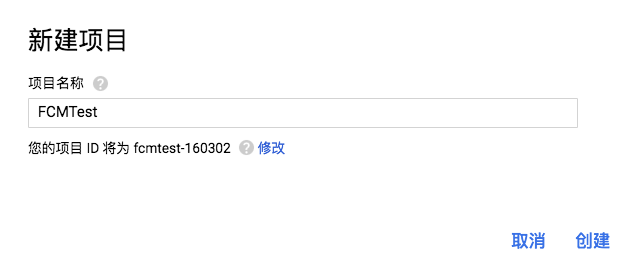 - 点击左侧菜单”库”–>在搜索框中输入”Google Cloud Messaging”–>在搜索结果中点击 Google Cloud Messaging –>点击”启用”
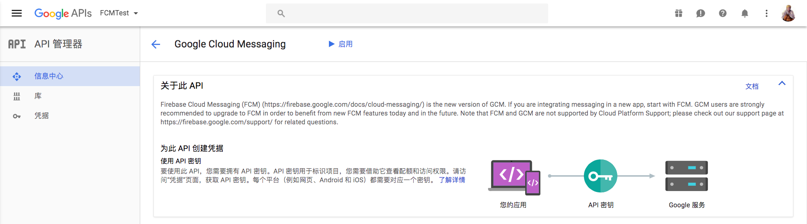 - 打开 Firebase控制台 –>选择”导入 Google 项目”–>选中之前创建的项目”FCMTest”–>国家/地区选择”中国”–>点击”添加 FIREBASE”
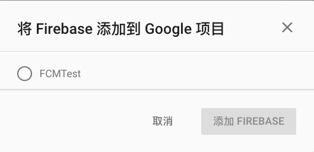 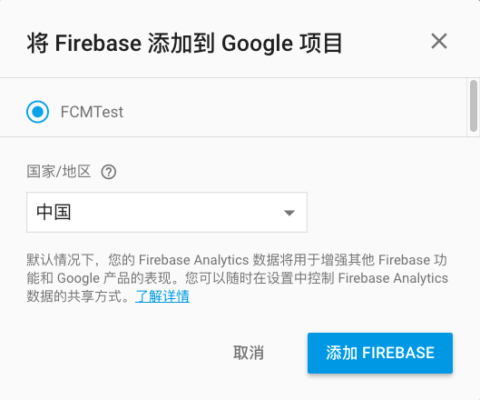 - 此时刷新 Google控制台 ，点击左侧菜单”凭据”会看到生成了两个 API 密钥，”Browser key”是网络 API 密钥，Server key 是云消息传递的服务器密钥，在 Firebase控制台 页面点击”Overview”–>项目设置也能看到
- 点击”Overview”–>点击”将 Firebase 添加到您的 Android 应用”–>输入包名”com.example.fcmtest”–>点击”添加应用”–>点击”Download google-services.json”来下载该配置文件–>点击”继续”–>点击”完成”，在”Overview”中会看到刚刚添加的应用，在”凭据”中也会看到新增了一个 API 密钥 Android key
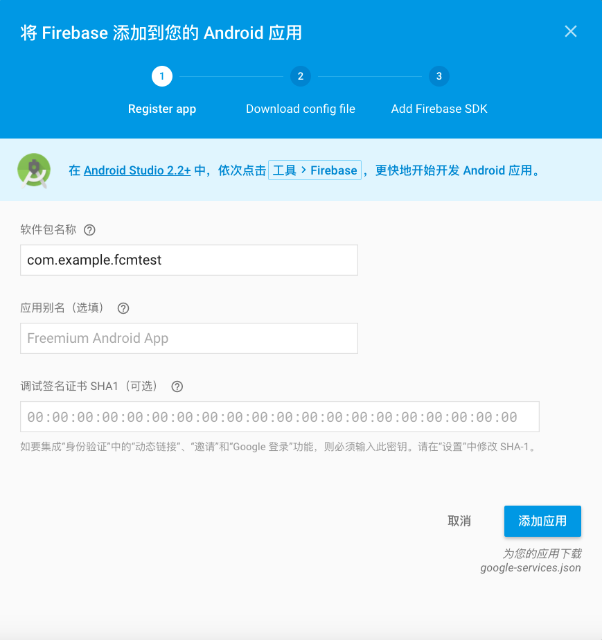
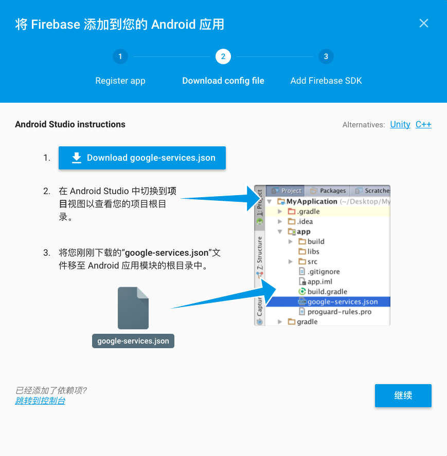
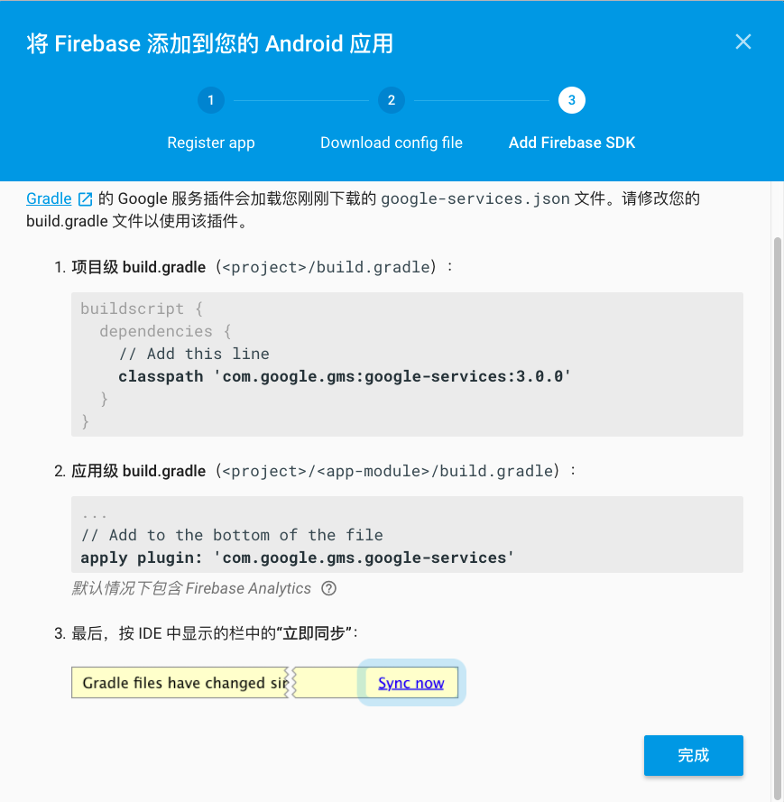
工程设置步骤
新建 Android Studio 工程
包名为”com.example.fcmtest”，minSdkVersion必须大于等于8
将先前下载的”google-services.json”文件添加到工程app根目录
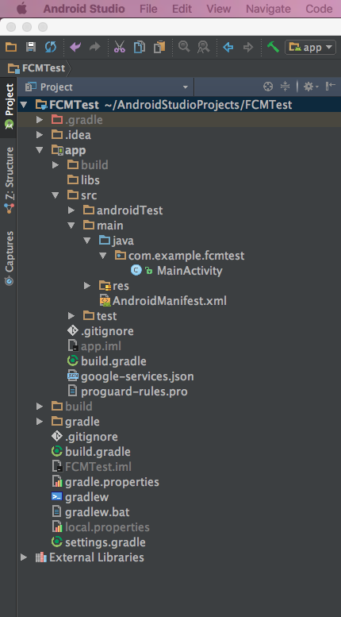
添加工程级依赖：
1 | buildscript { |
添加模块级依赖
1 | apply plugin: 'com.android.application' |
添加 FirebaseMessagingService 服务（相当于一个广播接收器）
如果希望在后台接收应用通知外的任何消息处理，则必须添加此服务，如果要再前台接收通知、接收数据负载以及发送上行消息等，则必须扩展此服务，重写部分方法
新建 MyFirebaseMessagingService 类，继承 FirebaseMessagingService，重写 onMessageReceived 方法，相当于广播接收器的 onReceived 方法
1 | public class MyFirebaseMessagingService extends FirebaseMessagingService { |
在manifest中注册，在 Application 结点下添加如下代码
1 | <!-- [START firebase_service] --> |
添加 FirebaseInstanceIdService 服务
该服务用于处理注册令牌的创建、轮转和更新，如果要发送至特定设备或者创建设备群组，则必须添加此服务（相当于对 cid 列表推送），重写 onTokenRefresh 方法来获取设备注册令牌
1 | public class MyFirebaseInstanceIDService extends FirebaseInstanceIdService { |
在manifest中注册，在 Application 结点下添加如下代码
1 | <!-- [START firebase_iid_service] --> |
检查 Google Play 服务 APK
依靠 Play 服务 SDK 运行的应用在访问 Google Play 服务功能之前，应始终检查设备是否拥有兼容的 Google Play 服务 APK。建议在以下两个地方进行检查：在主 Activity 的 onCreate() 方法中，以及在其 onResume() 方法中。在 onCreate() 中检查可确保该应用在检查未成功之前无法使用。在 onResume() 中检查可确保如果用户通过某些其他方式返回正在运行的应用（比如通过返回按钮），检查仍将继续进行。如果设备没有兼容的 Google Play 服务 APK，您的应用可以调用 GooglePlayServicesUtil.getErrorDialog() 以允许用户从 Google Play 商店下载此 APK，或在设备的系统设置中启用它。有关代码示例，请参阅设置 Google Play 服务。
1 | public class MainActivity extends AppCompatActivity { |
后续步骤
设置客户端应用后，即可开始使用 Firebase 控制台发送下游消息和使用 Firebase 控制台发送主题消息。快速入门示例演示了此功能，您可以下载、运行和查看快速入门示例。
要向您的应用添加其他更高级的行为，您可以声明 Intent 过滤器和实现 Activity 来响应传入消息。如需了解详情，请参阅从应用服务器发送消息的指南：
请记住，您需要一个服务器实现才能充分利用这些功能。
65535问题
程序run的时候会报65535问题，添加依赖compile ‘com.android.support:multidex:1.0.1’，新建MyApplication类，继承Application，并在manifest中设置Application的name为.MyApplication
开始测试
在 Firebase控制台 页面点击左侧菜单”Notifications”–>点击”发送您的第一条消息”
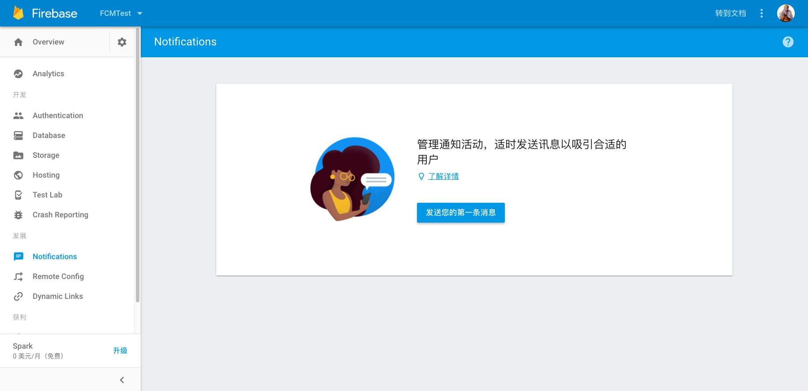
填写测试内容如下图
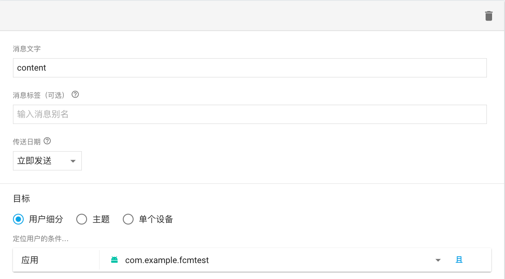
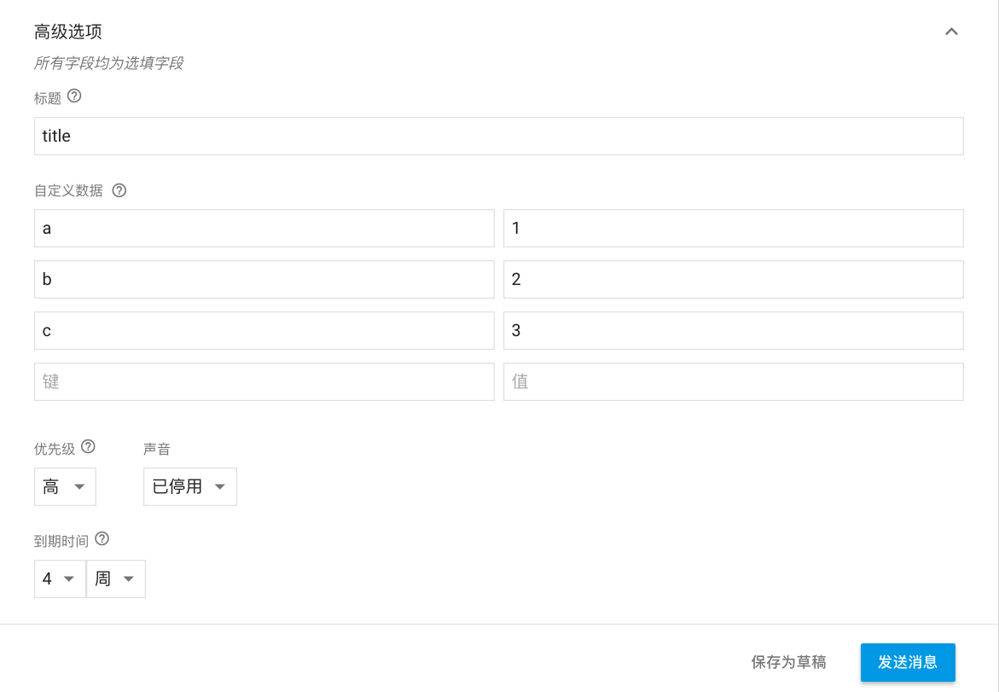
情况一：应用在前台
logcat 输出如下
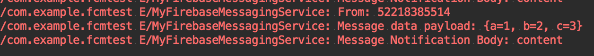
情况二：应用在后台
FirebaseMessagingService 会自动根据「通知」信息的一些参数，为我们在状态栏中创建一条通知信息。我们在点击这条通知时，会默认打开我们的APP。而「数据」信息需要通过Intent的getExtra来获取
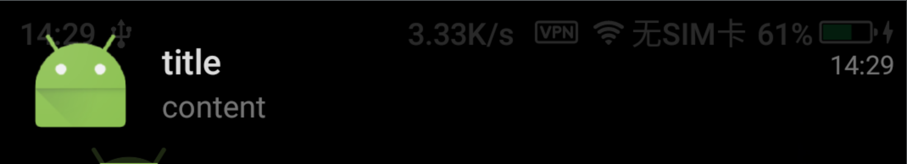
源码下载
如有疑问或者更好的策略，可以与我联系，谢谢！